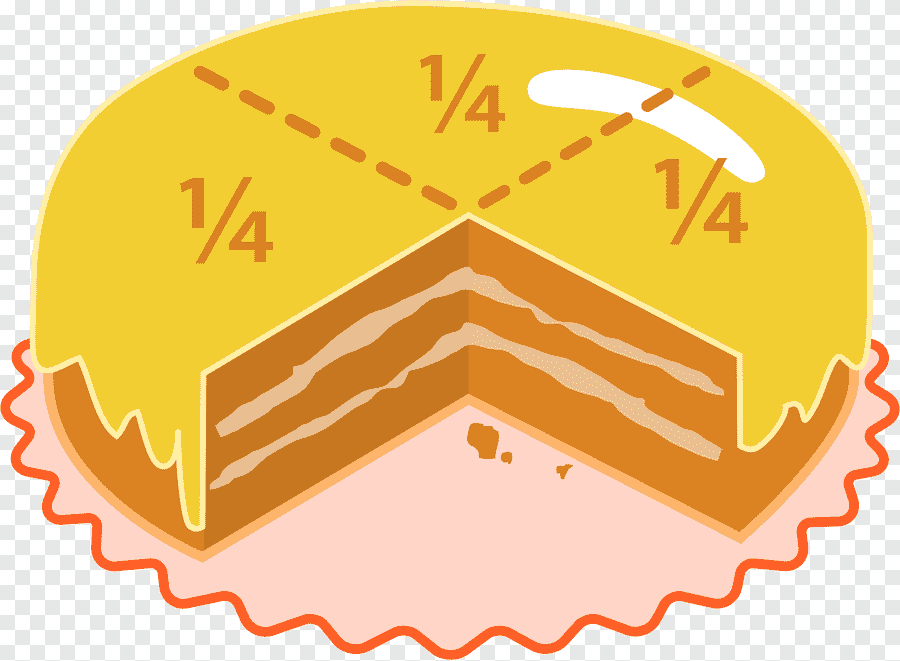

Una fraccion es la division de una unidad, consta de un numerador y un denominador, el numerador es la parte de arriba, es la parte que nos dice cuantas partes de la division tenemos, y el denominador es la parte de abajo, es la parte que nos dice cuantas partes hay en total, en cuantas partes se dividio la unidad.
Imagina que tienes un delicioso pastel de cumpleaños. Puedes elegir el sabor y el tamaño que más te guste. Decides partirlo en 8 partes iguales para ti y tus 7 amigos, porque quieren compartirlo en la fiesta. Esas 8 partes representan el total de rebanadas en las que dividiste el pastel, lo que llamaremos el denominador. El denominador nos dice en cuántas partes se ha dividido el pastel completo.
Pero cuando llega la hora de la fiesta, dos de tus amigos no pueden asistir. Sin embargo, el pastel ya está partido en 8 rebanadas, así que decides guardar las partes de tus amigos que faltaron. Al final, repartes solo 6 rebanadas, y esas 6 representan el numerador en una fracción. El numerador nos dice cuántas partes del total estamos usando. Entonces, si representamos esta situación con una fracción, tendríamos 6/8, donde: 6 es el numerador: las partes del pastel que repartiste. 8 es el denominador: las partes en las que dividiste el pastel. De esta forma, una fracción como 6/8 nos da una idea clara de cuántas partes del total estamos considerando o usando en cada situación. ¡Así de sencillo es entender las fracciones!
